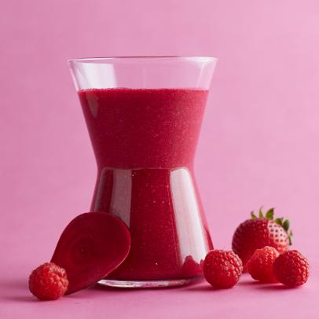

Strawberry Smoothie
Ingredients
- 1 cup strawberry yogurt
- 1 to 1-1/2 teaspoons sugar
- 1-1/2 cups frozen unsweetened strawberries
- 1/2 to 3/4 cup cranberry juice
- 1 cup frozen unsweetened raspberries
Instructions
- In a blender, combine all ingredients.
- Cover and process until smooth.
- Pour into chilled glasses.
- Serve immediately.
Nutricion facts
1 cup: 227 calories, 4g fat (2g saturated fat), 12mg cholesterol, 84mg sodium, 43g carbohydrate (37g sugars, 4g fiber), 7g protein.
Search source: Fruity Red Smoothies
Blueberry, pineapple, banana Smoothie

Ingredients
- 1 sliced banana, frozen
- 1/2 cup (120 ml) cold water
- 1/2 cup (120 ml) sweetened soy milk, or any other milk
- 1/3 cup (45 g) fresh or frozen blueberries
- 3/4 cup (100 g) frozen pineapple chunks
- Optional for some zing: a squeeze of lime/lemon juice or 1/2 teaspoon grated ginger
Instructions
- Blend all ingredients in a high speed blender until smooth.
- Divide between two glasses and enjoy!
Search source: Insanely Purple Smoothie
Avocado, baby spinach, banana and apple smoothie

Ingredients
- 1 ½ cup milk (dairy or dairy-free)
- 2 cups baby spinach
- 1 frozen banana
- 1 apple
- ¼ avocado
- plus optional add-ins
Instructions
- Add all of the ingredients to a blender and blend on high for 30 seconds, or until creamy.
Search source: Green Smoothie